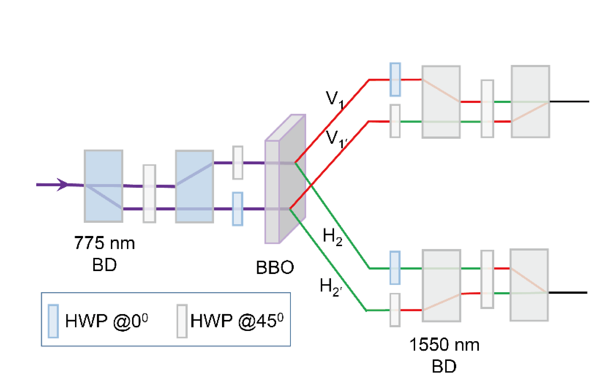
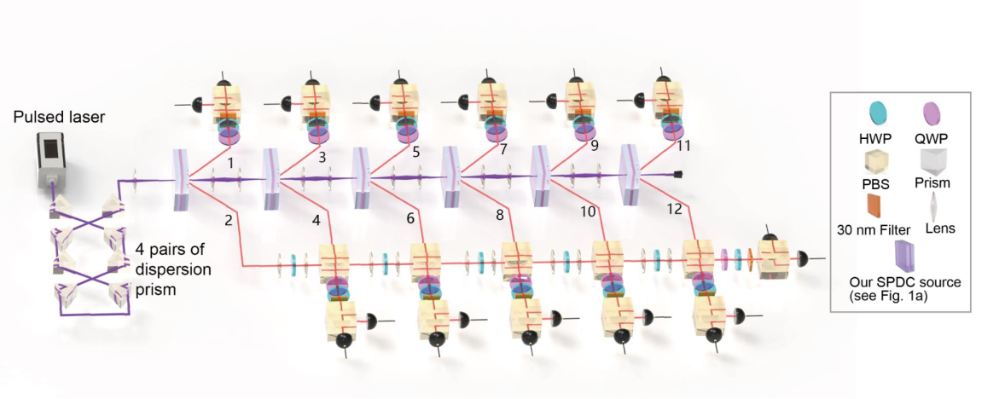

1.5.1. 12-photon entanglement and scalable scattershot boson sampling with optimal entangled-photon pairs from parametric downconversion[10]
In the view of quantum engineering, the single photons should be efficiently prepared in a pure state with a single degree of freedom. However, usually the uncontrolled entanglement in the frequency and/or time can significantly degrade the entanglement in the polarization.
Further, beam-like SPDC was developed with the photon pairs in the form of two separate Gaussian-like beams, which had higher brightness and efficiency coupling into a single spatial mode than those from the non-collinear SPDC where the collection was at intersections of the two down-converted photon rings.
Generally, due to conservation of momentum in SPDC, a lower momentum uncertainty of pump beam can lead to a higher collection efficiency. However, a larger pump beam waist could result in a lower pump energy density. Thus, there is a trade-off between the collection efficiency and brightness.
Thus, by combining our SPDC sources with multiplexing with fast and low-loss switches and suitable optical memories, it is possible to significantly enhance the overall efficiency, opening a new path to large-scale linear optical quantum computing.
The key idea of scattershot boson sampling is to use heralded single-photon sources connecting to different input modes of the interferometer, which can achieve an exponential times increase in the n-photon count rate to compete against the intrinsic probabilistic loss .

generate

By successively passing the laser through six BBO crystals, we first prepare six pairs of entangled photons. One photon from each pair is combined with the other five photons on a linear optical array of five polarization beam splitters (PBSs) that transmit and reflect polarization. Under this arrangement, post-selecting 12-photon coincidences implies that the output photons are either all or polarized—two cases are quantum mechanically indistinguishable—thus projecting them into a 12-photon Greenberger-Horne-Zeilinger (GHZ) state in the form of .